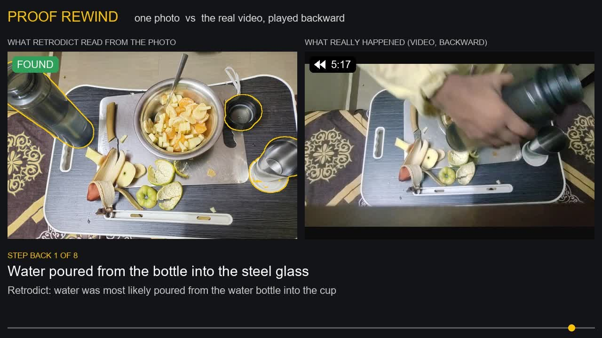
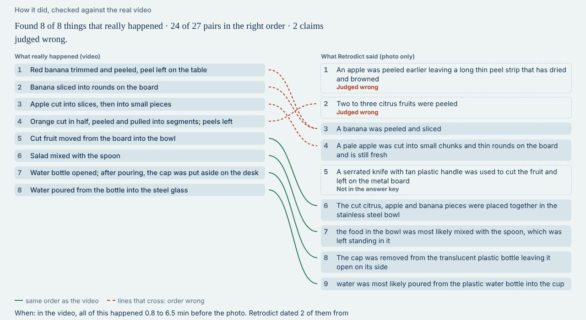

Retrodict
From one photo: what most likely happened before it was taken, in what order and when, each claim tied to evidence in the photo, then checked against a real video.
Explore the real runs yourself: the Retrodict page on both photos, every step, its evidence and the score against the video. Demo, 2.6 min. Code: github.com/MuraliKrishnaGR/retrodict
Only Meta models
How it works
- Propose. One reading of the whole photo lists what most likely happened, and what each claim rests on.
- Gather. SAM 3.1 finds that evidence: peels, slices, the glass, the cap.
- Prove. An investigator agent decides each claim; a second look works through a list of common actions for missed steps; a separate checker confirms or rejects every visible fact.
- Time. Times come only from physical clues: cut apple and banana still pale means cut within half an hour.
- Rewind. The real photo walked back, clue by clue. Nothing is generated.
- Check. A real video of the scene is the answer key, written before the first run, scored by a blind judge.
Proof rewind

Results on two real scenes
| Scene | Real events found | Order | Times | Evidence per claim |
|---|---|---|---|---|
| Fruit salad | 8 of 8 | 24 of 27 | 2 of 2 contain the real time | outlined and checked |
| Coffee and biscuits | 7 of 8 | 19 of 21 | 1 of 1 contains the real time | outlined and checked |
The pour into the glass was found from what it left: the bottle open, a glass on the tray, and the bottle's cap put down beside the glass. The answer key was committed before the runs it scores, and the judge's verdicts were checked against the video frames.

Honest by design
A time is given only when a real clue in the photo supports it; otherwise it says "time unknown". The rewind moves only real pixels and labels what it cannot show. Every result is a best guess from the photo, not proof.